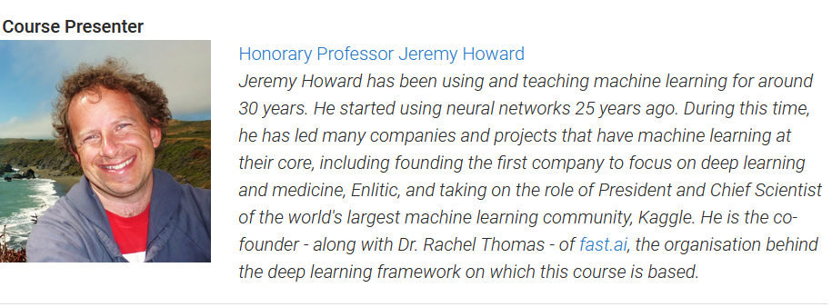

urls = search_images("bird photos", max_images=1)
urls[0]First there was a set of introductions by university officials at UQ like VC. One curious thing was everyone of UQ staff were honouring something traditionaly of that land to live in reconciliation.
Then lecture of Jeremy starts, seeing his face the chatbox is in delight.

Jeremy mentions there are two categories of students who attend the course:
- Students who have enrolled via University of Queensland(with almost 350 people attending in-person and about 100 people remotely as well).
- fastai fellows who have acknowledged for their contribution to community.
Jeremy recommends having study buddies when we are learning the course is important. So he asks to create Study groups wherever possible. This course is now happening after a gap of 2 years, so there is a lot of new things which has to be covered as Deep learning moves so fast.
Using Dalle-2 technique we can generative creative images from generate twitter bios. For a creative person, this can be very helpful to create good artwork. Then one of another popular techniques was using Pathways language model which is able to answers question with explanations and even explains why some jokes are funny.
Jeremy talks about his interest in education.He is a homeschooler and learned from books by Paul Lockhart & David Perkins which were inspiration for fast.ai. fastai teaches stuff in top-down manner. You will go into as much technical stuff as you, yet you will learn and implement cool stuff steadily.
About fast.ai course
He wrote an awesome book and this course. His book is one of the best sellers in Deep Learning and used to teach folks in companies like Tesla, OpenAI etc. Almost 6 million people watched his videos so far.Jeremy has won multiple competitions in Kaggle, was the CEO of kaggle. He build Enlitic, a medical company which was build for medical purpose with two other succesful startups.
Jeremy mentioned for this course, we are not using any material directly from Deep Learning For Coders with Fastai & Pytorch book. Yet he recommends to read portions of book after each chapter.
Usually multiple people learn better if the same idea is exposed in different way from multiple sources. That’s the why behind this approach.
Jeremy started coding hands-own a bird or park classifier, which was considered as a very difficult problem in 2015. Even a comic depicted this. Yet things have changed so drastically in past few years, that it’s very easy to do that now.
Yet let’s look, why we couldn’t build a bird classifer in 2015:
- For classifying histopothical images. They used computer vision techniques.
- They got big team of datascientist, mathematicans with lot of features who build relevant feature for machine learning hand by hand.
- These project took years
- Also deep learning was not in radar for researchers then.
What has now changed? - Using neural network they build these features on their own. - Mathew D Zeiler & Rob Fergus(and actual weights) showed with visualization how neural networks work - Combine all features to learn and go slowly in past, neural networks learned on it’s own these techniques.
If it’s a bird or not? notebook can be found here. I am slightly tweaking this model to leverage pytorch image-models released by timm.
from fastdownload import download_url
dest = "bird.jpg"
download_url(urls[0], dest, show_progress=False)
from fastai.vision.all import *
im = Image.open(dest)
im.to_thumb(256, 256)Note:
Image based algorithms, are not for images. Image for music classification by Deolho, Ethan sutin sounds from image recognizer. You can do music classification, with some creativity using cnns.
Also needing lots of data is a myth created by companies who sell data processng units. There are lot of free resources like Kaggle, Colab etc.
Observation by Jeremy: Tensorflow is slowly dying. Check this article which he cited. Yet pytorch has lot of hairy code, which can be solved using good abstractions in fastai.
- fastai library tries to provide good and the best fine-tuned models, which work well compared to other libraries. He showed code required for implementing AdamW in pytorch and in fastai.
Tanishq Abraham pointed me to implemtation of AdamW to chapter 16 in fastbook.
download_url(
search_images("forest photos", max_images=1)[0], "forest.jpg", show_progress=False
)
Image.open("forest.jpg").to_thumb(256, 256)
searches = "forest", "bird"
path = Path("bird_or_not")
for o in searches:
dest = path / o
dest.mkdir(exist_ok=True, parents=True)
download_images(dest, urls=search_images(f"{o} photo"))
resize_images(path / o, max_size=400, dest=path / o)failed = verify_images(get_image_files(path))
failed.map(Path.unlink)
len(failed)As the code showed, data cleaning is a big part of machine learninng. When we are learning this course as practitioners, we will spend lot of time of building and loading models. Like in compiler course lot of time is not spend on techniques, but on getting the environment up and ready.
dls = DataBlock(
blocks=(ImageBlock, CategoryBlock),
get_items=get_image_files,
splitter=RandomSplitter(valid_pct=0.2, seed=42),
get_y=parent_label,
item_tfms=[Resize(224, method="squish")],
).dataloaders(path)
dls.show_batch()After examining, 100s of project and datascience requirments. fastai came up with this approach of DataBlock, which consists of five things:
- blocks
- get_items
- splitter
- Batch_tfms(optional)
- get_y
- item_tfms
Without validation data, it won’t allow to train. parent_label, return parent folder. we saved as forests or birds. We need same size. Idea to do quickly, why not publish vision_learners with pets dataset.
Now it’s time to train our model
learn = vision_learner(dls, "vit_tiny_patch16_224", metrics=error_rate)
learn.fine_tune(10)One thing which is cool is that the whole presentation is also made with Jupyter Notebooks using RiseJS. Also jupyter notebooks can be used for writing books like Deep Learning for Coders, for blogging using fastpages, for CI/CD pipeline to run in parallel execution in fastai repo.
Tanishq Mathew Abraham has summarized on what can be done in this twitter threads.
twitter: https://twitter.com/iScienceLuvr/status/1519242326517829632
After this Jeremy, showed all the examples in Chapter 1 in Deep Learning for coders. My notes then:
We are still scratching the surface. Lot of marketing out there, some of first open source models available. The deep learning when it broke X, y, z in domain. In NLP it breaks lot of stuff
What’s really go in on : in arthur samuel with graph. The graphs are build with gv2 in jupyter notebook. Deploying models in ML is a bit tricky. But it’s just predict and shows results.
Conclusion by Jeremy
So after first lesson:
- If you know python, then it’s kind of easy for you.
- If don’t know python, it’s very difficult
Regardless of what level you are. Experiment yourself and do something more complex. Go ahead and push yourself a little bit, but not much. Then present your work. Do stuff on things where you are interested.